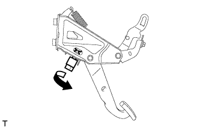

ВЫКЛЮЧАТЕЛЬ СТОП-СИГНАЛОВ > СНЯТИЕ |
| 1. СНИМИТЕ НИЖНЮЮ КРЫШКУ ПАНЕЛИ ПРИБОРОВ № 1 В СБОРЕ |
Для моделей с левосторонним рулевым управлением:
Введите в зацепление 2 фиксатора и 2 направляющих, чтобы установить нижнюю крышку панели приборов № 1.
Заверните винт.
Для моделей с правосторонним рулевым управлением:
Введите в зацепление 3 фиксатора и 2 направляющих, чтобы установить нижнюю крышку панели приборов № 1.
Заверните винт.
| 2. СНИМИТЕ ВЫКЛЮЧАТЕЛЬ СТОП-СИГНАЛОВ В СБОРЕ |
|  |
Отсоедините разъем.
Поверните выключатель стоп-сигналов против часовой стрелки и снимите его.
| 3. СНИМИТЕ МОНТАЖНЫЙ ПЕРЕХОДНИК ВЫКЛЮЧАТЕЛЯ СТОП-СИГНАЛОВ |
Снимите монтажный переходник выключателя стоп-сигналов.